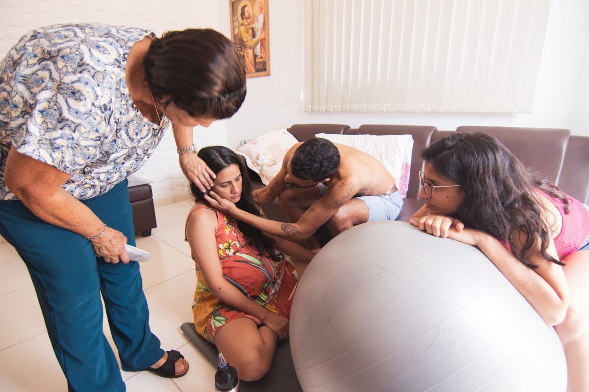

Birth is usually a natural process, and evolutionarily our bodies are designed to do it. Historically, however, there has been a high rate of both maternal and infant morbidity and mortality, which has fallen dramatically in the past 150 years thanks to medical advancements.
With this has come an increase in the medicalization of childbirth. This has resulted in many birth interventions that are sometimes seen as unnecessary, increases in labor analgesia that may not have been initially desired, and potential decreases in birth satisfaction.
It has also changed who is in the delivery room. In the not-too-distant past, it was common for people in labor to have the company of other women during birth to support them—particularly women who have given birth or at least attended other births. When I served in the Peace Corps in Cambodia, the picture of birth was very different from what we have in the US. Laboring people went to the village health center, where a midwife was constantly on site. Because there was typically only one laboring person at the center at a given time, the midwife had more opportunity for labor support. Births were also traditionally attended by female family members, who provided continuous support.
Contemporary births in the US, by contrast, are often attended only by medical staff and a single support person, often the birthing person’s partner who does not have experience with birth. This leaves a gap. Birthing people do not otherwise have continuous support from someone who knows what is going on; they only have support from their busy medical team and their birth-inexperienced partner.
A doula can fill this gap by providing informational, emotional, practical, and physical support during pregnancy, birth, and the postpartum period.
What the Clinical Evidence Says
To understand the impact of doulas, researchers often use systematic reviews, which are studies that aggregate and synthesize the results of many clinical studies into a single article.
In a recent systematic review of randomized controlled trials, compared to standard of care, people receiving intrapartum doula support had a 29% lower risk of cesarean delivery and a 36% lower risk of operative vaginal delivery, such as a forceps- or vacuum-assisted delivery. Importantly, there was no observed difference in low 5-minute Apgar scores. This finding indicates that people who had doula support safely underwent fewer interventions during labor, and this did not negatively impact their babies.
In another systematic review, doula support was found to be likely associated with lower rates of preterm birth, higher rates of spontaneous vaginal birth, and higher rates of vaginal birth after cesarean (VBAC).
Beyond Physical Outcomes
In addition to physical obstetric outcomes, a lot of attention has been paid to the impact of doulas on psychosocial outcomes, such as birth experience and perinatal mood disorders.
Doula support is likely associated with improved birth experiences, improved prenatal mood, satisfaction with care, self-efficacy, and parenting confidence. Other studies have also indicated that people receiving doula support had lower odds of developing postpartum depression or postpartum anxiety, enhanced social support, and reduced stress.
These benefits extend into the postpartum period, which involves physical recovery and major hormonal shifts. Postpartum doulas provide practical and informational assistance, such as lactation support, sleep strategies, and recognizing early warning signs of mood disorders, which fills the care gaps left by our current healthcare system. Research shows that doula support is also associated with increased rates of breastfeeding initiation and postpartum visit attendance.
Crucially, research regarding marginalized communities presents a compelling argument for expanding access to doulas. Black and Indigenous women in the United States face disproportionately high rates of maternal mortality and morbidity. Evidence indicates that doula support mitigates some of these disparities, potentially by providing individualized advocacy and acting as a buffer against implicit bias in medical settings. In low-income women, doula support was shown to improve breastfeeding success, including quicker lactogenesis and continued breastfeeding.
Supporting Every Kind of Birth
A primary role of the doula is facilitating and promoting the autonomy of the laboring person. It is easy for a person in labor to feel overwhelmed and too exhausted to continuously advocate for themselves. By clarifying values and preferences before labor, the doula is poised to help the laboring person navigate their choices in the throes of labor.
The majority of pregnant people are capable of having a low-intervention birth if that is what they desire. Some people want to have home births with licensed midwives, some people prefer to have hospital births with epidurals, and there are many people in the middle. All of these are valid desires!
However, there are many people who do not necessarily get to choose a lot of aspects of their births. Due to medical history or complications, they may need to give birth under specific circumstances for the safety of themselves and their babies.
I experienced this firsthand. I had a very low-risk pregnancy, continued my aerobic dance classes well into the second trimester, received care from a midwifery practice, and planned to have a hospital waterbirth. At my 39-week prenatal appointment, everything was normal. The next morning, I went into labor and was diagnosed with severe preeclampsia. My baby ended up in the NICU, and I required treatment for high blood pressure. This showcases how a very low-risk pregnancy can escalate extremely quickly, and everyone on the care team needs to understand how to recognize when care may need to be escalated.
I often encounter viewpoints online that are very anti-intervention and do not recognize the medical necessity of many interventions. I believe this makes people who have to have these interventions feel extreme loss and guilt that they did not birth in the "right" way.
These people also deserve to be recognized in birthwork. Even when people do not have the picture-perfect birth, they can still be empowered to make choices which improve their birth experiences.
Having a dedicated advocate to provide continuous support throughout labor is essential for promoting positive birth experiences and clinical outcomes.